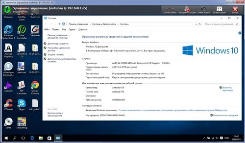

Программы Инструкция по установке и настройке iTALC
Программы Инструкция по установке и настройке iTALCСвободно распространяемые программы для Windows
Статьи
Программы
Rss рассылка
Хотите подписаться на обновления?
Введите email адрес:
Форма входа
Последние статьи
Похожие материалы:
Вы здесь: Главная Программы Инструкция по установке и настройке iTALC
Инструкция по установке и настройке iTALC
Обновлено: 06.09.2019 18:16

Поскольку у большинства пользователей имеются проблемы с настройкой ITALC, было принято решение создать подробную инструкцию по установке и настройке клиентской и серверной части iTALC, то есть компьютера ученика и учителя. Это уже вторая версия инструкции, так как 3 версия iTALC настраивается в разы легче, инструкция была переработана и не подойдёт для 2 версии. Данное руководство поможет вам настроить iTALC на компьютерах на базе операционных систем Windows 7, 8, 8.1, 10, Vista, XP. Инструкция подходит для iTALC версий 3.0.0 и выше.